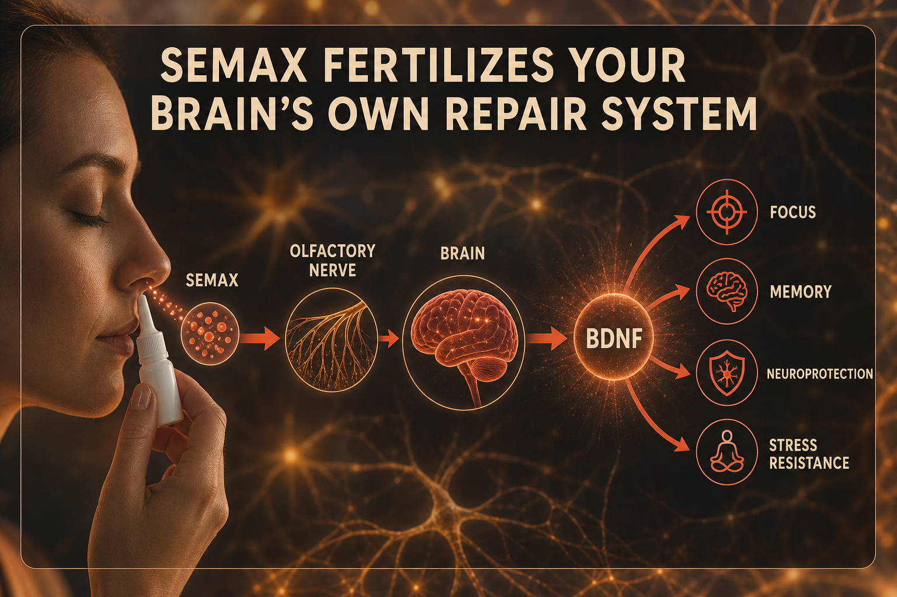

What Semax Is
Semax is a heptapeptide developed in Russia in the 1980s as a synthetic analog of ACTH 4-7. It has been used as a prescription drug in Russia for post-stroke rehabilitation and cognitive impairment since the 1990s. Scheduled for FDA PCAC review July 24, 2026 for potential 503A compounding list inclusion.
It is typically administered intranasally - its molecular structure allows it to cross the nasal mucosa and reach the brain via the olfactory nerve. Its primary mechanism is BDNF upregulation - the protein that supports neuron growth, maintenance, and survival, often called the brain's fertilizer. It also partially engages melanocortin MC3/MC4 receptors and inhibits enkephalin-degrading enzymes, prolonging endogenous mood-regulating peptide activity.
Plain English Version
The Gardener Who Adds Fertilizer to the Brain
Neurons are plants. Young brains have full BDNF supply - neurons grow strong, form new connections, repair quickly. By your 40s the fertilizer supply has naturally declined. Neurons still work but grow more slowly and connect less readily. You experience it as brain fog, slower recall, reduced sustained focus.
Semax does not add artificial stimulants. It upregulates BDNF - telling your brain's own maintenance system to produce more of its own fertilizer. The effect is not a jolt. It is the mental static clearing away. Users describe thinking straighter, holding more information simultaneously, accessing recall with less friction.
The Russian clinical stroke application is built on the same mechanism. After stroke, neuroplasticity determines function recovered. BDNF drives that rewiring. Semax enhances BDNF.
One sentence: Semax stimulates BDNF - the brain's own growth fertilizer - clearing mental fog without the forced-stimulation side effects of conventional stimulants.
How To Picture It

How It Works
Primary: BDNF and NGF upregulation through MC3/MC4 partial agonism and HPA axis normalization. Secondary: inhibition of enkephalin-degrading enzymes prolonging endogenous opioid tone. Nasal route reaches brain via olfactory nerve, bypassing blood-brain barrier.
Documented Benefits
most consistently documented
reduced infarct in stroke models
Russian prescription indication
Dosing Protocol
| Protocol | Dose | Route | Frequency | Notes |
|---|---|---|---|---|
| Microdose | 100-200mcg | Intranasal | Every few hours | Short-burst cognitive support |
| Standard | 300-600mcg | Intranasal | Once or twice daily | Cognitive maintenance |
| Therapeutic | 600mcg-1mg | Intranasal or SubQ | Twice daily | Higher-load protocols |
| Cycle | 10-14 days on | Either | 7 days off | Maintain sensitivity |
Reconstitution Standard
Intranasal: XA5 (5mg vial) + 5ml sterile water = 1mg/ml 300mcg = 0.3ml = 6 drops nasal applicator SubQ: XA5 + 2ml BAC water = 2.5mg/ml; 300mcg = 12 units
Dosage Build-Up Timeline
- Week 1-2: 200mcg once daily - baseline response
- Week 3-4: 300-600mcg daily - standard
- Week 5-10: Maintain or twice daily as needed
- Week 11: 7 days off
- Repeat 10-14 day on cycles
Common Mistakes
clarity and friction reduction, not caffeine jolt
additive effects
sensitivity reduces over weeks
sterile water required
Contraindications And Cautions
additive effects; discuss
melanocortin pathway modulation
monitor carefully
What To Track
- Mental clarity 1-10 daily first 2 weeks
- Memory recall quality
- Anxiety levels - note any increase at higher doses
- Sleep quality - avoid late-day dosing if disruption occurs
- Productivity and task completion weekly
Stacks Well With
- Selank - focus/drive plus anxiety reduction; space 15-30 min
- NAD+ - energy alongside BDNF
- BPC-157 - safe to combine for cognitive plus repair
Sources
- Semax Wikipedia. en.wikipedia.org/wiki/Semax
- Semax Dosing Guide 2026. parahealth.com
- PeptideInitiative Semax. peptideinitiative.com
- FDA PCAC July 24 2026 - Semax review. fda.gov
- Helimeds Semax vs Selank 2026. helimeds.com
For educational and research documentation purposes only. Not medical advice. Always speak with a qualified healthcare professional before making health decisions.